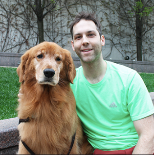
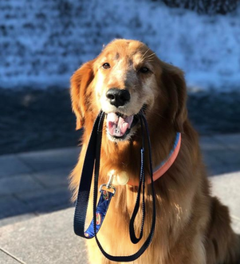
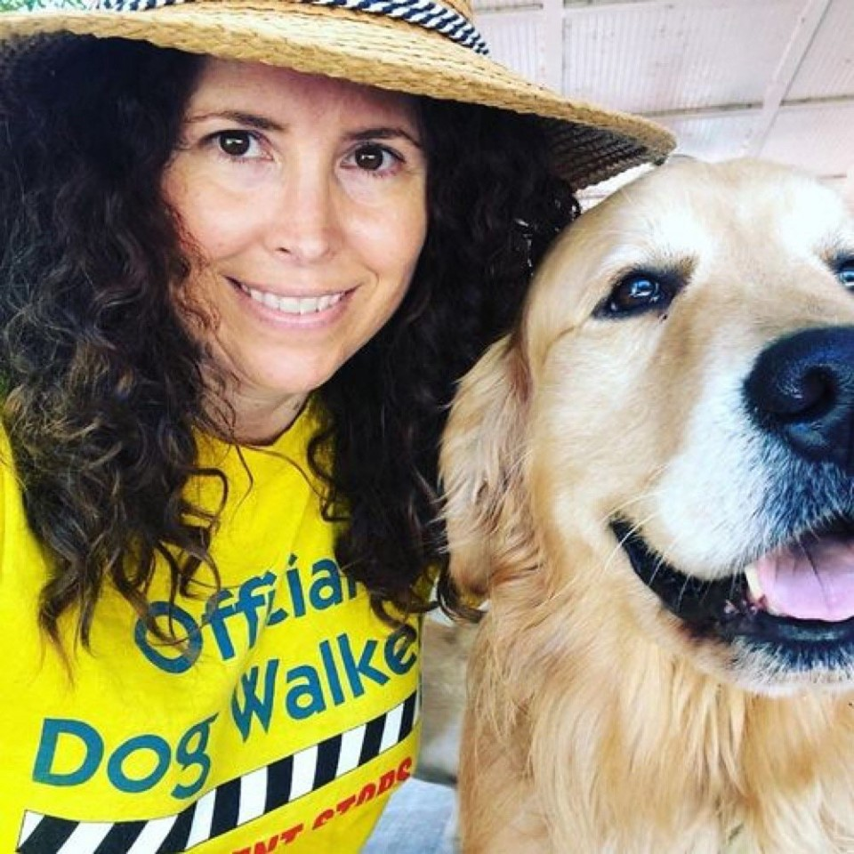

Hvem er vi?
Etableret i 2019, S.Water er en online shopping side med lager i Køge, Danmark, fyldt med hårdtarbejdende medarbejdere, der alle har til mål at skabe en vandflaske der er praktisk, nyttig og nem at anvende. Vi er et forholdsvis nyt firma der går ind for genbrug, sundhed og dyrenes velfærd. Derfor går en del af vores profit også til dyrenes beskyttelse.
Hvad vil vi opnå?
Det er ekstremt vigtigt for os at sørger for både hunde og ejere holder sig godt hydreret når de begiver sig ud på dagens gå, cykel eller løbetur. Alt dette fordi det er livsvigtigt for mennesket at få den væske de har brug for, især på ture hvor der bliver brugt meget energi. Vi vil gerne gøre mere opmærksomhed på dette, og det håber vi at vi opnår!
Fremtiden for S.Water
Vi arbejder hele tiden på at udvikle og forbedre vores vandflasker. Med base i Danmark sørger vi først og fremmest for vores danske hunde og ejere, men har dog planer om at dele med resten af verden et tidspunkt i den nære fremtid.
